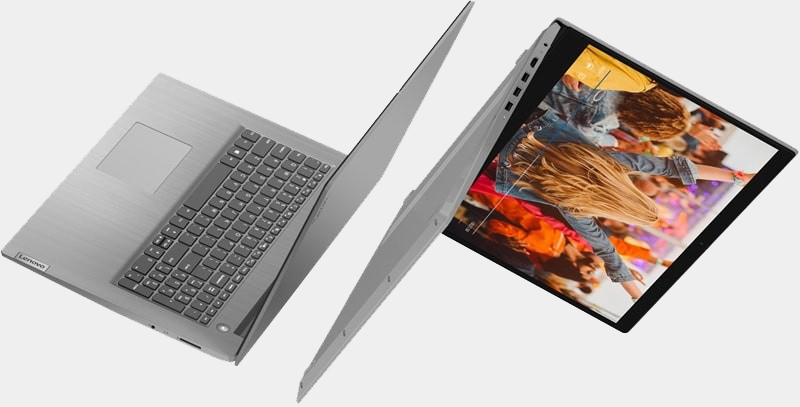
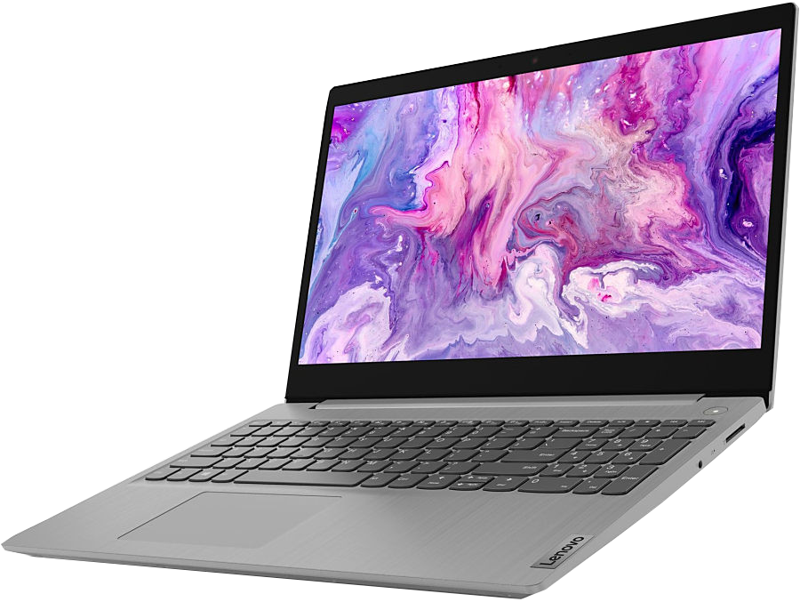
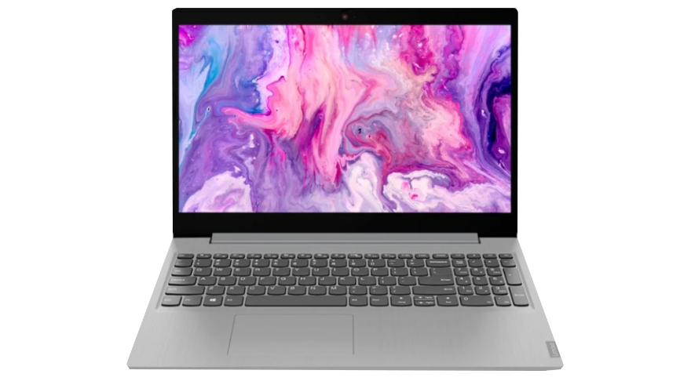
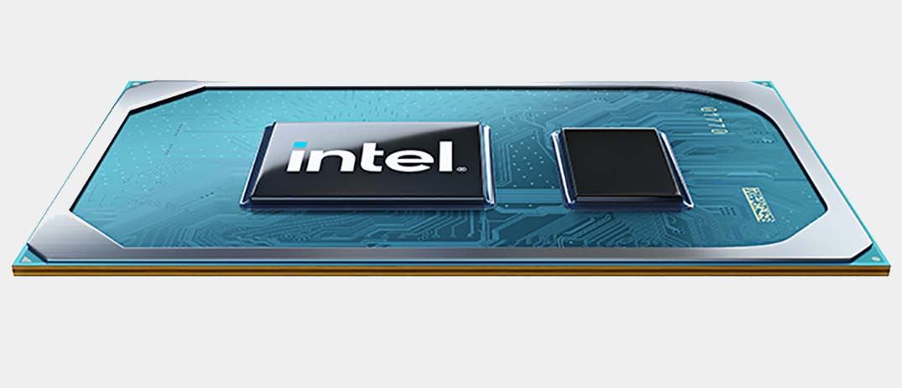

<!DOCTYPE html>
<html lang="ru">
    <meta http-equiv="Content-Type" content="text/html" charset="utf-8">
    <title>Lenovo</title>
    <link rel="stylesheet" href="css/IdeaPad.css">
    <link rel="stylesheet" href="css/all.css">
    <link rel="preconnect" href="https://fonts.googleapis.com">
    <link rel="preconnect" href="https://fonts.gstatic.com" crossorigin>
    <link href="https://fonts.googleapis.com/css2?family=Lora&family=Radio+Canada:wght@300;400&display=swap" rel="stylesheet">
</html>
<body>

    <nav  id="mainNav">
        <div class="layer2"></div>
        <div class="layer1">
            <ul id="navbar">
                <li><a href="main.html">Главная</a></li>
                <li><a href="Catalog.html">Каталог</a></li>
                <li><a href="Info.html">Информация</a></li>
                <li><a href="Contact.html">Контакты</a></li>
            </ul>
        </div>
    </nav>

    <header id="mainHeader" class="hea">
        <h1 > Ноутбук Lenovo IdeaPad 3</h1>
    </header>

    <article id="mainArticle">
            <div>
                <div class="layer3"></div>
                <div class="layer4">
                   <h2 align="left">Краткие характеристики:</h2>
                   <h3 align="left">15.6" 1920 x 1080 IPS, 60 Гц, несенсорный,  </h3> 
                   <h3 align="left">AMD Ryzen 5 5500U 2100 МГц, 8 ГБ DDR4, SSD 256 ГБ, видеокарта встроенная.</h3>
                </div>
                <div  id="cin"><h3>1891 р.</h3> <a href="Order.html" >купить</a></div>
            </div>
    </article>

    <main id="mainMain">
        <h1>Внешний вид</h1>
        <div class="imgscale">
            
            
        </div>
        <h1>Описание</h1>
            <h4>Производительность, направленная на достижение целей</h4>
            <p>С ноутбуком IdeaPad 3i Gen 6 (15) учиться или работать из дома будет еще приятнее. Ноутбук отличается высокой производительностью, которую обеспечивают процессоры Intel® Core™ 11-го поколения, а также поддерживает интеллектуальные функции, позволяющие снизить нагрузку на глаза и меньше отвлекаться. IdeaPad 3i Gen 6 (15) оснащен 15-дюймовым дисплеем FHD с ультратонкими (по всем сторонам) рамками, чтобы вы могли насладиться высоким качеством изображения для работы и развлечений.</p>
            <h4>Производительность без ограничений</h4>
            <p>Ноутбук IdeaPad 3i Gen 6 (15) поможет справиться с любой задачей благодаря беспрецедентной скорости и интеллектуальным возможностям процессоров Intel® Core™ 11-го поколения, а встроенная видеокарта Intel® Iris® Xe обеспечит высокое качество изображения. Мощности ноутбука хватит для запуска самых сложных приложений и игр AAA. При этом его интеллектуальные функции обеспечат оптимальную производительность новейших процессоров, которыми оснащено устройство, — все для эффективной работы и приятных развлечений дома.</p>
            <div ></div>
            <h4>Улучшенное качество изображения</h4>
            <p>Ноутбук оснащен 15,6-дюймовым дисплеем (опционально сенсорным дисплеем) стандарта FHD с узкими рамками, которые не отвлекают внимания от изображения — теперь вы сможете увидеть все до мельчайших деталей. С этим устройством приятно работать, на него приятно смотреть. Благодаря зауженным рамкам ноутбук IdeaPad 3i Gen 6 (15) отличается одним из самых высоких коэффициентов активной площади экрана среди устройств своего класса.</p>
            <h4>Особое внимание сохранению здоровья</h4>
            <p>Ноутбук IdeaPad 3i Gen 6 (15) поддерживает интеллектуальные функции, направленные на борьбу с негативным физическим и психологическим воздействием от долгого пребывания перед экраном. Он поможет уберечь зрение и меньше отвлекаться. Ноутбук сокращает нагрузку на глаза при долгой работе за компьютером, а также подавляет фоновый шум и наложение звука во время звонков.</p>
            <h4>Конфиденциальность превыше всего</h4>
            <p>В последнее время многие попадали в неловкие ситуации, связанные со случайным включением веб-камеры. Иногда это было, скорее, забавно, иногда — унизительно… Иногда и то и другое одновременно. Чтобы гарантировать конфиденциальность вашего личного пространства, камера ноутбука IdeaPad 3i Gen 6 (15) оснащена физической шторкой — стоит только ее закрыть, и вам больше не придется беспокоиться о том, не оставили ли вы случайно камеру включенной после завершения звонка.</p>
    </main>

    <footer id="mainFooter" class="foooter">
        <div class="footer__content ">
            <div class="wid"></div>
            <div class="footer__social">
                <a href="AboutUS.html">О Нас</a>
                <a href="Contact.html">Контакты</a>
                <a href="https://vk.com/ia_prosto_hochy_pizzy" class="vka"></a>
                <a href="https://www.instagram.com/sebas.domashni" class="insta"></a>
            </div>
            <div class="wid"></div>
        </div>
    </footer>

</body>